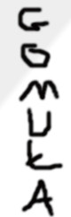

Sekrety Gomułki
Narodziny Gomułki
Okres Międzywojenny
Polska Droga do Socjalizmu
Więzienie i odsunięcie od władzy
Urodził się w Białobrzegach Franciszkańskich (obecnie dzielnica Krosna) w rodzinie robotniczej Jana (1873–1941) i Kunegundy z domu Bazan (1872–1954), pielęgnującej tradycje patriotyczne. Jego ojciec był członkiem Polskiej Partii Socjalno-Demokratycznej Galicji i Śląska Cieszyńskiego, a po 1918 Polskiej Partii Socjalistycznej. Władysław Gomułka naukę ukończył w wieku 12 lat. Od 1919 pracował jako ślusarz w przemyśle naftowym. Mając 17 lat, otrzymał dyplom czeladnika ślusarskiego.
W latach 1922–1925 działał w organizacji młodzieżowej PPS „Siła”. Został sekretarzem okręgu związku w Drohobyczu. Usunięty z organizacji za krytykę polityki PPS dokonaną na wiecu z udziałem posła Hermana Liebermana (organizację rozwiązały władze za aprobatą Centralnego Komitetu Wykonawczego PPS, a Gomułka po raz pierwszy przesłuchiwany był przez policję). W 1924 zwolniony z pracy w rafinerii z powodu zorganizowania strajku. Po zwolnieniu prowadził działalność samokształceniową i udzielał się w kółku dramatycznym i chóralnym w Białobrzegach. W latach 1925–1926 należał do Niezależnej Partii Chłopskiej. Tymczasowo aresztowany za prowadzenie agitacji NPCh na wiecu pierwszomajowym PPS w Krośnie. Z tego powodu Klub Poselski NPCh skierował interpelację do Ministra Spraw Wewnętrznych w sprawie „bezprawnego pozbawienia wolności obywatela Władysława Gomułki przez komendanta posterunku w Krośnie”. W 1926 zorganizował strajk w kopalniach ropy naftowej w Drohobyczu, za co został aresztowany.
Od 1926 należał do nielegalnej Komunistycznej Partii Polski (od 1930 był funkcjonariuszem Komitetu Centralnego KPP). Oficjalnie działał w PPS-Lewica (w 1929 znalazł się jako delegat I Zjazdu partii w Komisji Programowej oraz wszedł w skład KC i Sekretariatu Generalnego) aż do jej rozwiązania przez władze sanacyjne w 1931. Działał w Związku Zawodowym Chemików na Górnym Śląsku. W 1930 z polecenia KPP współtworzył, a następnie przewodniczył Ogólnokrajowemu Związkowi Robotników Przemysłu Chemicznego. W 1930 nielegalnie udał się na zjazd Profinternu w Moskwie. Przy kolejnym aresztowaniu (1932), podczas organizowania strajku w Łodzi, odniósł ciężką ranę postrzałową, po której pozostał mu niedowład nogi. Po tym aresztowaniu został skazany w jednodniowym procesie na 4 lata więzienia za próbę „zmiany przemocą ustroju państwa polskiego”.
Po prawie dwuletnim pobycie w więzieniach w Łodzi, Łęczycy i Białymstoku otrzymał krótki urlop zdrowotny, podczas którego pod fałszywym nazwiskiem wyjechał do ZSRR. W latach 1934–1935 leczył się na Krymie i przebywał w Moskwie, gdzie ukończył szkołę partyjną – Międzynarodową Szkołę Leninowską. Przeszedł tu m.in. elementy przeszkolenia wojskowego, którym kierował Karol Świerczewski. Przeszkolenie zorganizowane było przez Razwiedupr. Po powrocie do kraju został zawodowym funkcjonariuszem partyjnym (funkiem) działającym w podziemiu; mieszkał w Chorzowie, kierując okręgiem śląskim KPP. W okresie lat 30. wielokrotnie aresztowany na 48 godzin w związku z uczestnictwem w demonstracjach politycznych lub prewencyjnie (np. w związku z przyjazdem do Polski króla Afganistanu Amanullaha Chana). W 1936 został skazany na 4,5 roku więzienia za „przygotowywanie zbrodni stanu” (6-letni syn Gomułki był na sali sądowej; w tym czasie żona Gomułki odsiadywała 3-letni wyrok za działalność komunistyczną i osadzony w więzieniu w Sieradzu (był tam przywódcą „komuny więziennej” liczącej ok. 400 więźniów). W 1939 wraz z całą „komuną” złożył wniosek o przyjęcie na ochotnika do wojska. Wniosek został odrzucony. Był z przerwami przetrzymywany w więzieniu do wybuchu II wojny światowej (łącznie spędził w więzieniu 6 lat). W sierpniu 1938 KPP została rozwiązana, a większość jej przywódców zamordowana w ZSRR w okresie „wielkiej czystki” jeszcze w 1937, największa grupa komunistów przetrwała w polskich więzieniach.
